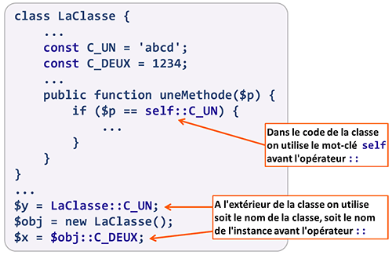

Seuls les types de données scalaires (booléen, entier, double et chaîne de
caractères) peuvent être affectés comme valeur d'une constante.
Une fois définie, la valeur d'une constante de classe n'est plus
modifiable.
Tous les objets instances de la classe contenant les constantes partagent
la valeur de ces constantes. Il y ont tous accès en lecture, mais pas en écriture.
Il n'est pas possible de spécifier la visibilité d'une constante. Les constantes ont une
visibilité public par défaut.
Pour illustrer l'utilisation des constantes, nous allons ajouter un nouvel attribut à la classe
Guitare. L'attribut son définira l'acoustique de la guitare, à savoir : acoustique,
à résonateur, électro-acoustique, électrique. Ces valeurs seront stockées dans 4 constantes.
Utiliser des constantes, résolution de portée
On NE PEUT PAS pas utiliser l'opérateur -> avec une constante.
Pour faire référence à une constante de classe dans notre code, nous devons utiliser l'opérateur
:: (double deux-points). L'opérateur :: est également appelé opérateur
de résolution de portée.
Suivant l'endroit du code où on fait référence à la constante, l'opérateur de portée est précédé
:
- du mot-clé self,
- du nom de la classe,
- de la variable instance de la classe.

utiliser une constante avec l'opérateur de portée
Exercice : constantes de classe
Reprenez le code de la classe Livre ci-dessous et utilisez des constantes de classe
pour gérer les 4 catégories de livre possibles ("Méthode", "Partition", "Biographie" ou
"Autre").
// Définition de la classe Livre
class Livre {
private $titre, $auteur, $pages, $prix, $cat;
public function __construct($p1, $p2, $p3, $p4, $p5) {
$this->titre = $this->verifChaine($p1, 'titre');
$this->auteur = $this->verifChaine($p2, 'auteur');
if (is_numeric($p3) && estEntre($p3, 10, 1000)) {
$this->pages = $p3;
} else {
$this->afficheErreur($p3, 'pages');
}
if (is_numeric($p4) && estEntre($val, 0, 1000)) {
$this->prix = $p4;
} else {
$this->afficheErreur($p4, 'prix');
}
$oks = array('Méthode', 'Partition',
'Biographie', 'Autre');
if (in_array($p5, $oks)) {
$this->cat = $p5;
} else {
$this->afficheErreur($p5, 'cat');
}
}
private function verifChaine($val, $attr) {
$val = trim($val);
($val == '') && $this->afficheErreur($val, $attr);
return $val;
}
private function afficheErreur($val, $attr) {
exit("<hr>Valeur '<b>$val</b>' invalide pour
l'attribut <b>$attr</b>.<hr>");
}
public function decrire() {
echo '<h4>Instance de la classe Livre</h4>',
$this->titre, ' - ', $this->auteur, ' - ',
$this->pages, ' pages - ',
$this->prix, ' € - ', $this->cat, '<hr>';
}
} // Fin de la classe Livre
Vous devez instancier 4 livres avec les informations suivantes :